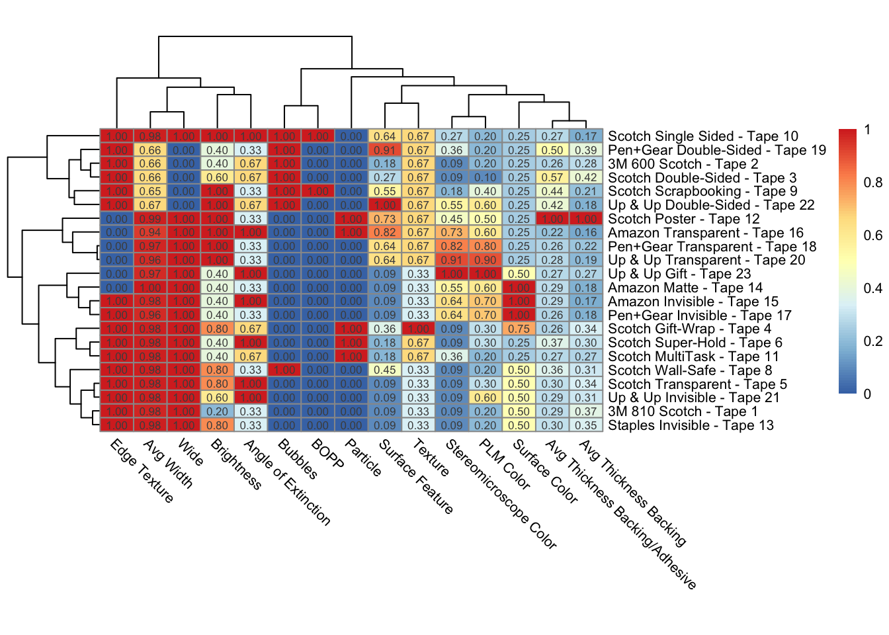

Differentiating Tape for Trace Evidence
1 Project Background
Each roll of tape was divided into 3 sections based on each roll’s length and each roll of tape was divided into 3 sections based on each roll’s length. Site 1 refers to the beginning section of each roll, site 2 refers to the middle section of each roll and site 3 refers to the last/end section of each roll. Meanwhile, the width and thickness were measured using a caliber tool.
The experiment descriptions and procedures involves multiple points. The width measurements of the tapes were meticulously conducted on a singular day, with three measurements taken at each designated site, resulting in a total of nine measurements per roll. In contrast, the thickness measurements spanned multiple days, with a key emphasis on blind measurements, ensuring the accuracy and integrity of the data. Similar to the width measurements, the thickness measurements also consisted of three measurements at each site, yielding a total of nine measurements per roll.
To assess the significance of the findings, the client utilized a two-factor ANOVA with replicated analysis, both for the widths and the thicknesses of the tapes. This robust statistical approach was employed to determine whether there existed any noteworthy differences among the various tape samples. Additionally, the client employed a power of discrimination formula, as referenced in pertinent research literature, to discern if significant variations were present among groups of tapes with distinct physical attributes. Furthermore, this formula was adeptly utilized to ascertain the presence of significant disparities among the tape groups with differing physical characteristics and angle of extinctions, contributing to the comprehensive evaluation of the experimental data.
The raw data provided by the client https://docs.google.com/spreadsheets/d/1ZPM0a1mVVcM8CcvVHBy32hc5yPdICWp9mimaw94MDS0/edit#gid=111836551
2 Objectives
As we grasp the ultimate goals and objectives of this project, the client seeks to determine whether various types of tape can be reliably distinguished from one another. The primary aim is to investigate the potential use of tape as trace evidence in forensic science. Key aspects related to the tapes include, firstly, their frequent presence on victims or their use by suspects in the creation of improvised explosive devices. Secondly, the question arises of whether tape can be considered as questioned evidence, subject to comparison with known samples to establish links between individuals and specific cases.
3 Exploratory Data Analysis
This part provides a concise summary of the data cleaning and organization steps for the four datasets: width.csv, thickness.csv, stereo_phys.csv, and plm.csv.
3.1 width.csv
- Data Loading: The dataset was loaded into the variable
width. - Column Removal: Averages and standard deviation columns were deleted.
- Text Cleaning: “Tape” was removed from the
Xcolumn. - Data Type Conversion: Values in columns 1-10 were converted to numeric.
- Row Removal: Rows containing NAs and “tape 7” were removed.
- Renaming Columns: Columns were renamed to a specific format.
- Data Transformation: The dataset was reshaped to a longer format.
3.2 thickness.csv
- Data Loading: The dataset was loaded into the variable
thickness. - Column Removal: Averages and standard deviation columns were deleted.
- Text Cleaning: “Tape” was removed from the
Xcolumn. - Data Type Conversion: Values in columns 1-10 were converted to numeric.
- Row Removal: Rows containing NAs and “tape 7” were removed.
- Renaming Columns: Columns were renamed to a specific format.
- Data Splitting: Data was split into
thickness_baandthickness_backing. - Data Transformation: Both subsets were reshaped to a longer format.
- Data Merging: Merged
width,thickness_ba, andthickness_backinginto a single dataset nameddata.
3.3 stereo_phys.csv
- Data Loading: The dataset was loaded into the variable
stereo. - Column Removal: Columns
X.4toX.9were removed. - Text Cleaning: “Tape” was removed from the
Xcolumn and the-value in theX.3column was replaced with “no color”. - Renaming Columns: Columns were renamed to descriptive names.
- Data Merging: Physical data from
stereowas merged with thedatadataset.
3.4 plm.csv
- Data Loading: The dataset was loaded into the variable
plm. - Column Removal: Columns
X.7toX.12were removed. - Row Removal: Rows corresponding to “tape 7” and the last two rows were removed.
- Renaming Columns: Columns were renamed to descriptive names.
- Text Cleaning: The
-value in theplm_colorcolumn was replaced with “no color”. - Data Transformation: The
BOPPcolumn was converted to binary values. - Data Merging: Physical data from
plmwas merged with thedatadataset.
3.5 Encoding Data
- Encoding Categorical Variables: Several columns were encoded into numeric values.
- Data Type Conversion: Converted several categorical columns to numeric.
4 Models
The method used to analyze the dissimilarities between each of the 22 tapes involves visualizing a heatmap with hierarchical clusterings of the tapes. These clusterings are determined by the “distances” between each tape.
4.1 Tape Distances
Defining a distance between tapes provides a measure of dissimilarity between each tape. Variables for each of the tapes included three numerical variables (width, thickness of backing, and thickness of backing and adhesive) as well as 12 categorical variables. Not all of the variables are numeric and as a result, the Gower’s distance is calculated between two tapes which accounts for both numerical and categorical variables. Before taking the Gower’s distance between each tape, the categorical variables were first converted to numeric values by encoding each level of the variable 1 to the total number of levels of that variable. For example, the categorical variable Texture has three levels: “Rough”, “Smooth”, “Slightly Rough”. “Rough” was coded as 1, “Smooth” was coded as 2, and “Slightly Rough” was coded as 3. Each number was then divided by the total number of levels to obtain normalized variables from 0 to 1. In the example, “Rough” now has the numerical value 0.33, “Smooth” now has the numerical value 0.67, and “Slightly Rough” now has the numerical value 1.
Once all categorical variables were coded numerically, Gower’s distance calculates a matrix of dissimilarities for each of the \(\frac{n(n-1)}{2} = \frac{22(22-1)}{2} = 231\) pairs of tapes. For the three numerical variables, a range-normalized Manhattan distance is calculated: \[|\frac{T_{ik} - T_{jk}}{\text{range}_k}|\] where \(i, j = 1, 2, \dots, 22\) and \(k = 1, 2, 3\). For the remaining 12 categorical variables, the distance is calculated with the following formula: \[I(T_{im} \neq T_{jm})\] where \(i, j = 1, 2, \dots, 22\) and \(m = 4, 5, \dots, 15\). This indicator will equal 1 if \(T_{im} \neq T_{jm}\) and 0 if \(T_{im} \neq T_{jm}\). Gower’s distance between two tapes is calculated by summing these variable distances and dividing by 15, the number of variables.
4.2 Heatmap
Once we have the pairwise distances between tapes from the data, we can use a heatmap and multidimensional scaling to visually identify similarities and dissimilarities between tapes. In a heatmap cells are color-coded to quickly compare one row or tape to another. The heatmap also allows one to aggregate the rows in clusters based on the distances calculated from the previous section. The following figure is the heatmap generated for the 22 tapes using Gower’s distance.
4.3 Multidimensional Scaling
Multidimensional scaling provides another method of visualizing these clusters and their distances from each other on a two dimensional plot. Although the data for each tape is multivariate, multidimensional scaling preserves the distances between pairwise observations when plotting. Multidimensional scaling also takes in the distances calculated from Section 4.1 and returns a set of 22 points where the distances between each point is approximately equal to the dissimilarities between each point. These points are then plotted on a two dimensional scatter plot to visualize the “closeness” of the tapes and can be viewed below.
<<<<<<< HEAD pheatmap analysis: According to pheatmap pictures, 22 tapes were divided into 5 clusters. Cluster 1 is composed of Tape 10(Scotch Single Sided), Tape 19(Pen + Gear Double-Sided), Tape 2(3M 600 Scotch), Tape 3(Scotch Double-Sided), Tape 9(Scotch Scarpbooking) and Tape22(Up & Up Double-Sided).
Cluster 2 is composed of Tape 12(Scotch Poster), Tape 16(Amazon Transparent), Tape 18(Pen+Gear Transparent) and Tape20(Up & Up Transparent).
Cluster 3 is made Up of Tape 23(Up & Up Gift),Tape 14(Amazon Matte), Tape 15(Amazon Matte) and Tape17(Pen+Gear Invisible).
Cluster 4 is made up of Tape 4(Scotch Gift-Wrap), Tape 6(Scotch Super-Hold) and Tape11(Scotch MultiTask).
Cluster 5 is composed of Tape 8(Scotch Wall-Safe), Tape 5(Scotch Transparent), Tape 21(Up & Up Invisible), Tape1 (3M 810 Scotch) and Tape13(Staples Invisible).
5 Cluster 1 feature: All tapes in this cluster have a smooth edge texture, are narrow in width, exhibit a clear surface color, possess a smooth texture, contain bubbles, and have no particles. In Surface Feature, each tape is different. For example, tapes has Minimal Surface Features, Large bubble and Irregular, Circular bubbles, Irregular large bubble(water-like), Many Grooves and bubbles, and Grooves(water-like).
6 Analysis and Conclusion
pheatmap analysis: According to pheatmap pictures, 22 tapes were divided into 5 clusters. Cluster 1 is composed of Tape 10(Scotch Single Sided), Tape 19(Pen + Gear Double-Sided), Tape 2(3M 600 Scotch), Tape 3(Scotch Double-Sided), Tape 9(Scotch Scarpbooking) and Tape22(Up & Up Double-Sided).
Cluster 2 is composed of Tape 12(Scotch Poster), Tape 16(Amazon Transparent), Tape 18(Pen+Gear Transparent) and Tape20(Up & Up Transparent).
Cluster 3 is made Up of Tape 23(Up & Up Gift),Tape 14(Amazon Matte), Tape 15(Amazon Matte) and Tape17(Pen+Gear Invisible).
Cluster 4 is made up of Tape 4(Scotch Gift-Wrap), Tape 6(Scotch Super-Hold) and Tape11(Scotch MultiTask).
Cluster 5 is composed of Tape 8(Scotch Wall-Safe), Tape 5(Scotch Transparent), Tape 21(Up & Up Invisible), Tape1 (3M 810 Scotch) and Tape13(Staples Invisible).
Cluster 2 feature: All tapes of this cluster are rough, are wide in width, exhibit High Bright in brightness, have a smooth texture, a clear surface color, don’t have bubbles, and are categorized as MOPP. In Stereomicroscope Color, each tape is different. For example, tapes has Pink/Green/Yellow/Purple/Blue, Blue/Pink, Pink/Red/Orange, and Purple/Blue.
Cluster 3 feature: All tapes of this cluster are wide in width, exhibit Bright in brightness, have a rough surface feature and texture, have no particles, don’t have bubbles, and are categorized as MOPP. In PLM Color, tape is different. For example, tapes has Yellow, Light Green, and Yellow/Gold.
Cluster 4 feature: All tapes of this cluster have a smooth edge texture, are wide in width, have particles, don’t have bubbles, and are categorized as MOPP. In Brightness, tape is different. For example, tapes has Bright and Low Bright.
Cluster 5 feature: All tapes of this cluster have a smooth edge texture, are wide in width, mostly exhibit a rough surface feature, have a rough texture, display a Pink color under the stereomicroscope, have a Matte surface color, contain particles, and are categorized as MOPP. In Brightness, tape is different. For example,tapes has Low Dark, Low Bright and Dark.
7 Conclusion
Therefore, according to the analysis of pheatmap, we can know that pheatmap can effectively distinguish different tapes and find out their similar rules. Each cluster has many of the same variables in its tape. At the same time, each cluster also has a different place, which can distinguish all tapes, it is easy to find the tape number and brand.